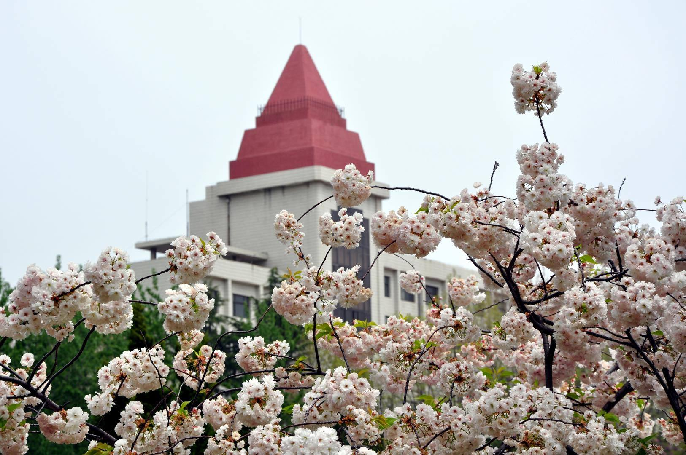
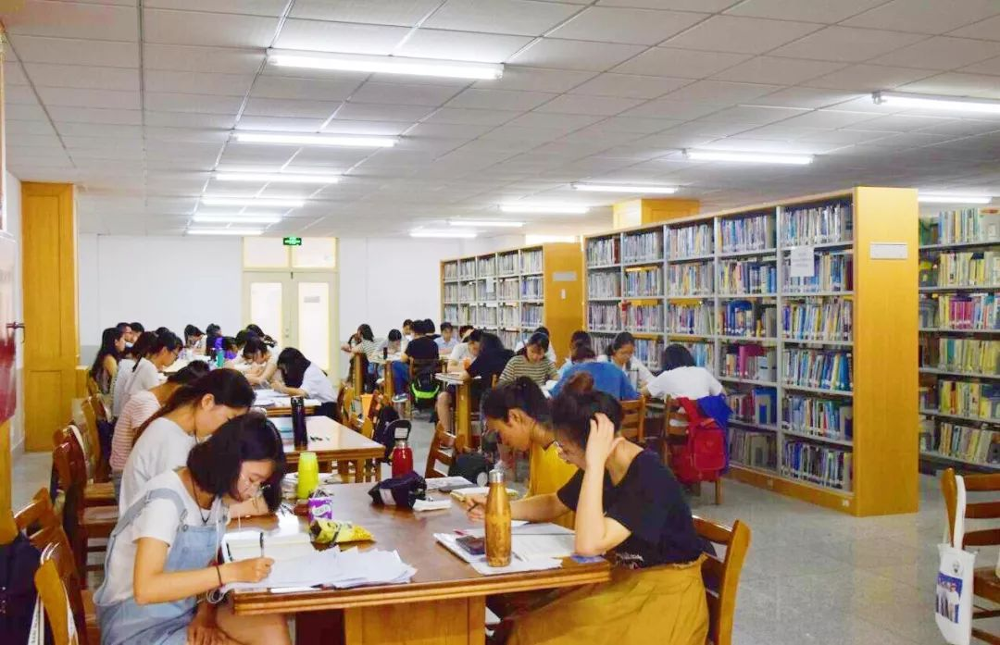
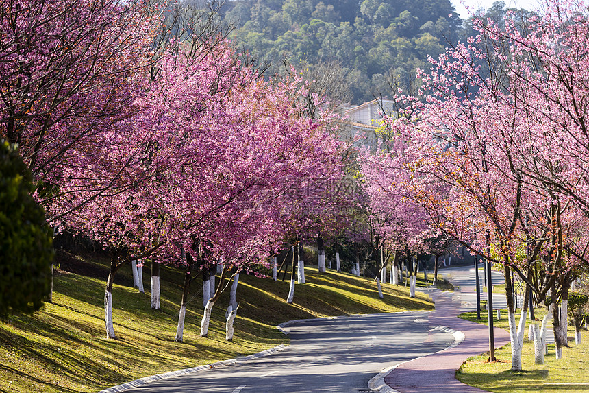

春风拂过校园的每一个角落，唤醒了沉睡一冬的生机。图书馆前的玉兰花悄然绽放，洁白的花瓣在阳光下泛着温润的光泽，风一吹便落下细碎的花影，落在路过同学的肩头。人工湖畔的垂柳抽出了嫩黄的新芽，细长的枝条垂在水面上，漾开一圈圈温柔的涟漪，偶尔有锦鲤摆尾划过，搅碎了倒映在水中的蓝天白云。
田径场旁的草坪早已换上了翠绿的新衣，蒲公英顶着嫩黄的小花，在风中轻轻摇曳，等待着风把种子带去远方。樱花大道的粉白花瓣铺满了整条道路，走在其中仿佛置身于童话世界，花香萦绕鼻尖，连脚步都变得轻快起来。午后的阳光透过梧桐的新叶，在地面投下斑驳的光影，三三两两的同学坐在长椅上读书、聊天，青春的气息与春日的生机交融，构成了校园里最动人的风景。
傍晚时分，夕阳为校园镀上了一层暖金色，晚霞染红了半边天，与教学楼的轮廓相映成趣。归巢的鸟儿掠过天际，留下几声清脆的鸣叫，为这春日的校园增添了几分灵动。无论是清晨的薄雾，还是黄昏的余晖，校园的每一处风光都藏着春日的温柔，见证着我们最美好的青春时光。


